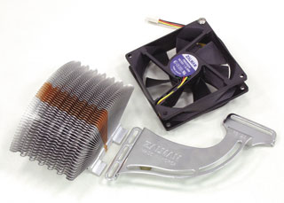
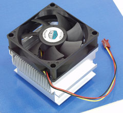

Олег Денисов, Сергей Назаров
За прошедший год на рынке процессоров для ПК по сути не произошло ничего значительного - компании Intel и AMD, задающие здесь тон, совершенствовали разработанные ранее процессорные ядра и пока не выпустили процессоры следующего поколения с новой архитектурой.
Так, тактовая частота Intel Pentium 4 на базе ядра Northwood возросла в полтора раза (с 2,0 до 3,06 ГГц), частота системной шины - на 30% (с 400 до 533 МГц). Ядро процессора Athlon XP, напротив, за прошедший год модифицировалось дважды, но незначительно. Сначала производство ядра Palomino перевели с нормы техпроцесса 0,18 мкм на 0,13 мкм - новая версия этого ядра была названа Thoroughbred. Потом у Thoroughbred подняли тактовую частоту системной шины - с 266 до 333 МГц. Наконец, объем кэша L2 у Thoroughbred увеличили с 256 до 512 Кбайт и таким способом получили еще одно ядро - Barton.
Однако среди ряда "косметических" новшеств, внедренных в настольные процессоры за последнее время, пожалуй, есть единственное исключение - компания Intel встроила в Pentium 4 средства Hyper-Threading, что потребовало значительной реконструкции конвейера этого процессора.
Многопоточность, многопроцессорность и Hyper-Threading
Во времена первых ПК и безраздельного господства ОС MS-DOS программы работали чрезвычайно просто. Процессор ПК мог одновременно выполнять только одно приложение, так что пользователям "дозволялось" работать только с одной программой. А если ОС нужно было "добраться" до процессора, то она выставляла соответствующее прерывание, исполняемая программа "запоминала" свое текущее состояние, делала "паузу" в работе и передавала управление ОС.
Со временем систему прерываний усовершенствовали, что позволило выполнять под управлением MS-DOS одновременно целых два приложения - благодаря использованию так называемых TSR-программ (terminate-and-stay-resident). TSR-программы стали настоящим кошмаром для системных администраторов, поскольку они пытались "заставить" MS-DOS делать то, для чего эта ОС не была предназначена, - переключаться между двумя выполняемыми приложениями, и "дестабилизировали" работу системы. Напомним, что, в отличие от, скажем, Windows и различных вариантов Unix, которые имеют все необходимые для этого средства, MS-DOS изначально проектировалась как однопоточная (single-threaded) и однопроцессорная (single-processor) система.
По мере усложнения программ и возрастания требований к мощности ПК стало очевидно, что при обработке только одного потока исполняемого кода вычислительные ресурсы процессора используются неэффективно. Чтобы разрешить ситуацию, программисты начали разрабатывать операционные системы, способные одновременно обрабатывать несколько порций исполняемого кода, названных потоками (thread), - т. е. многопоточные (multithreaded) ОС (во избежание недоразумений поток исполняемого кода мы будем называть программным потоком, а поток процессорных инструкций - потоком инструкций). Отметим, что все современные ОС для ПК - многопоточные.
Однако многопоточные ОС - это лишь половина концепции многопоточного ПО. Вторая половина заключается в том, что для достижения максимальной производительности сложные приложения должны быть также многопоточными - т. е. состоять из нескольких программных блоков, которые выполняются одновременно и контролируются главным управляющим блоком этой программы. Кстати, все многопоточные ОС спроектированы "изнутри" как многопоточные приложения: в один и тот же момент времени часть загруженных компонентов ОС может работать, а другая - бездействовать в ожидании каких-либо событий.
В итоге можно сказать, что многопоточность - это возможность одновременного выполнения нескольких программных потоков, принадлежащих одному приложению (что обеспечивается многопоточностью этого приложения), или нескольким приложениям (что обеспечивается многопоточностью ОС).
На практике сложные многопоточные программы (такие, как СУБД, научные и инженерные расчетные программы, мультимедийные пакеты) порождают не два потока, а гораздо больше. Например, ядро СУБД создает свой программный поток для каждой обрабатываемой записи, что позволяет избежать блокировки операций ввода-вывода. В итоге при работе с объемными базами данных порождаются сотни, если не тысячи программных потоков, выполняемых одновременно в одной системе.
Использование многопоточных ОС и приложений - далеко не единственный способ повышения производительности процессорной подсистемы компьютеров. Так, для решения задач, в которых приходится обрабатывать огромные массивы данных, используют многопроцессорные вычислительные системы, содержащие от двух до нескольких тысяч процессоров. В этом случае как минимум ОС должна "уметь" одновременно выполнять разные приложения и разные программные потоки одного приложения на нескольких процессорах - иными словами, она должна быть многопроцессорной (multiprocessing). Кроме того, для извлечения максимальной выгоды от использования многопроцессорных систем приложения также должны быть многопоточными и "уметь" выполнять свои программные потоки параллельно на нескольких процессорах, т. е. прикладное ПО должно быть тоже многопроцессорным.
Таким образом, многопроцессорность - это возможность одновременного выполнения нескольких программных потоков на нескольких процессорах, которая должна быть в обязательном порядке обеспечена многопроцессорностью ОС и может быть "усилена" многопроцессорностью прикладного ПО.
Hyper-Threading (HT) - это новая технология, разработанная Intel, которая позволяет на одном процессоре обрабатывать одновременно два потока инструкций. Это достигается за счет дублирования, динамического разделения и полного разделения ресурсов одного физического вычислительного конвейера.
Под дублированием (replicating) понимается создание двух физических копий одного ресурса, причем каждая из них передается в "единоличное" пользование одному потоку инструкций. В HT-процессоре дублируются такие ресурсы, как AS-блок (Architectural State; он содержит данные о состоянии регистров общего назначения, управляющих и служебных регистров и APIC-регистров), APIC-контроллер прерываний (Advanced Programmable Interrupt Controller), набор указателей инструкций (Next Instruction Pointers), RAT-таблица соответствия логических и физических регистров (Register Alias Table; в ней содержатся данные о соответствии между восемью логическими IA-32 регистрами общего назначения и физическими регистрами процессора), ITLB-блок (Instruction Translation Look-aside Buffer; используется в том случае, если в кэше команд нет инструкций, которые нужно выполнить в контексте исполняемого потока) и т. д.
Динамическое разделение (partitioning) - это разделение одного физического ресурса на две части, каждая из которых обслуживает "свой" поток инструкций. В HT-процессоре динамически разделяются некоторые буферы (например, буфер переупорядочения микроопераций - Re-Order Buffer и буферы загрузки/выгрузки микроопераций - Load/Store Buffers), очереди (например, очередь декодированных команд - Uop Queue) и т. д.
Полное разделение (sharing) - это разделение по времени доступа одного физического ресурса между двумя конкурирующими потоками инструкций. Например, в течение первого рабочего такта ресурс обслуживает первый поток инструкций, в течение второго - второй и пока оба потока работают, они постоянно меняются ролями. Но если один из потоков приостанавливает работу, то ресурс временно передается в полное распоряжение другого потока до тех пор, пока "заснувший" поток не активизируется. В HT-процессоре полностью разделяются кэши L1 и L2, кэш трассировки выполнения микроопераций (Trace Cache), блоки извлечения/декодирования (Fetch/Decode) инструкций, блок предсказания переходов (Branch Prediction) и все вычислительные ALU- и FPU-блоки.
Таким образом, физически HT-процессор представляет собой один двухпоточный процессор, который может параллельно обрабатывать два потока инструкций, используя ресурсы одного вычислительного конвейера. Однако логически HT-процессор эмулирует два независимых однопоточных процессора, каждый из которых способен обрабатывать только один поток инструкций, поэтому ОС "воспринимает" HT-процессор как два независимых.
Очевидно, что для реализации преимуществ HT-процессора требуется как минимум многопроцессорная ОС - это необходимое условие повышения скорости работы системы при одновременном выполнении нескольких однопроцессорных приложений. Однако для извлечения максимальной пользы от HT-процессора при работе с одной программой нужно еще, чтобы приложение тоже было многопроцессорным.
Первыми процессорами, оснащенными HT-средствами, были процессоры семейства Intel Xeon. Позднее HT-технология была встроена в Intel Pentium 4 (на текущий момент в этом модельном ряду есть только один HT-процессор - Pentium 4 3,06 ГГц), и вот почему. Изначально процессорная архитектура NetBurst, используемая в Pentium 4, была спроектирована как однопоточная, но поскольку Pentium 4 имеет несколько вычислительных блоков, работающих параллельно, то при обработке одного потока инструкций используется далеко не вся мощь этого процессора. Напомним, что модуль выполнения микроопераций Pentium 4 содержит два целочисленных блока (причем каждый за один такт может выполнить две микрооперации) и два блока выполнения микроопераций с плавающей точкой, распараллеленных между двумя портами (по одному блоку каждого типа на порт). В итоге за один такт Pentium 4 может выполнить, например, четыре целочисленные или две вещественные микрооперации. По данным Intel, при обработке типичного потока инструкций Pentium 4 задействует всего лишь около 35% своих вычислительных ресурсов. Поэтому инженеры корпорации в поисках способа более эффективного использования возможностей архитектуры NetBurst в конце концов решили оснастить Pentium 4 средствами Hyper-Threading.
Согласно результатам тестов, проведенных Intel, использование HT-процессора позволяет повысить производительность системы на величину до 30%. При этом, однако, необходимо помнить, что при замене однопроцессорной системы на многопроцессорную скорость работы некоторых программ может снижаться - как уже упоминалось, ОС и ПО "воспринимают" машину с одним HT-процессором Pentium 4 как двухпроцессорную систему. Типичный пример - рендеринг сцены в OpenGL-приложениях.
Методика тестированияПрограмма испытаний процессоров для настольных систем состояла из двух частей. В первую часть вошли тесты из стандартных тестовых пакетов: на скорость работы процессора и ОЗУ из пакета SiSoft Sandra Standard 2002.6.8.97 и дисковой подсистемы и видеоподсистемы при работе с 2D-графикой из пакета ZD WinBench 99 2.0, 3D-тесты для измерения скорости работы с DirectX-приложениями и тест на скорость работы процессора из пакета MadOnion 3DMark03, 3D-тесты на скорость работы с популярными OpenGL-приложениями из пакета SPECviewperf 7.0, интегральные тесты из пакетов ZD Business Winstone 2002 1.0.1 и ZD Multimedia Content Creation Winstone 2003 1.0 для измерения общей производительности ПК при работе соответственно с популярными офисными программами и наиболее распространенными приложениями для создания Web-контента, а также тесты из состава еще одного интегрального пакета SYSmark 2002, где измеряется быстродействие системы при работе с популярным ПО - как офисным, так и для создания Web-контента. Мы также использовали программу WCPUID 3.1a для измерения рабочих тактовых частот ядра процессора и системной шины. Все тесты проводились в 2D-видеорежиме с глубиной цвета 32 бит, разрешением 1280x1024 и частотой кадровой развертки 75 Гц, за исключением 3D-тестов из пакета 3DMark03, которые выполнялись в Direct3D-видеорежиме с глубиной цвета 32 бит, разрешением 1024x768 и с отключением Vsync. Во второй части испытаний мы проверяли скорости работы реальных приложений. В нее вошли следующие тесты: решение системы нелинейных дифференциальных уравнений (реальная расчетная задача из области квантовой механики, написанная на языке Fortran-77 и оперирующая в основном вещественными числами двойной точности; ее исполняемый код был скомпилирован средствами пакета Compaq Visual Fortran 6.6 с установками по умолчанию и при работе не использует расширенные наборы инструкций MMX, SSE, SSE2, 3DNow!), конвертирование звукового WAV-файла в звуковой MP3-файл средствами кодека LAME 3.93 (использует наборы инструкций MMX, SSE, SSE2, 3DNow!), архивация набора файлов пакетом WinRAR 3.11 (556 файлов и 123 каталога с общим объемом данных 100 Мбайт), конвертирование видеоролика формата MPEG-2 (длительность - 60 с, разрешение - 704x576, частота кадров - 25 кадр/с, объем файла - 26,1 Мбайт) в видеоролик формата MPEG-4 с помощью пакета MPEG Mediator 1.5 (оптимизирован для работы с набором MMX-инструкций) и кодека DivX 5. 03. Дополнительно проверялось влияние Hyper-Threading на скорость выполнения приложений в одно- и двухзадачном режиме и исследован эффект от использования SSE/SSE2-инструкций при решении системы нелинейных дифференциальных уравнений и циклическом выполнении элементарных вычислительных операций. Все тесты выполнялись под управлением ОС Microsoft Windows XP Professional Build 2600 с Service Pack 1, драйверами для НМС системных плат последней версии, драйвером видеоплаты NVIDIA Detonator XP 30.82 и обновлением Microsoft DirectX 9.0 при объеме ОЗУ 512 Мбайт. Компиляция исполняемого кода проводилась с помощью Intel C++ Compiler 5.0.1 (далее для краткости будем называть его Intel C++), Intel Fortran Compiler 5.0.1 (Intel Fortran) и Compaq Visual Fortran 6.6 (Compaq Fortran). Использовалось следующее стендовое оборудование: процессоры Intel Pentium 4 3,06 ГГц, Intel Pentium 4 2,0 ГГц (512-Кбайт кэш L2, ядро Northwood), Intel Celeron 2,2 ГГц, AMD Athlon XP 3000+ (2167 МГц), AMD Athlon XP 1900+ (1600 МГц), AMD Duron 1,3 ГГц; системные платы ASUS P4T-E (набор микросхем Intel 850E, обеспечивается работа с памятью PC800 RDRAM), ASUS P4T533 (Intel 850E, PC4200 RDRAM), ASUS P4PE (Intel 845PE), ASUS A7N8X (NVIDIA nForce2), Intel D850EMV2 (Intel 850E, PC1066 RDRAM), Iwill KK400 (VIA Apollo KT400), Iwill P4GB (Intel E7205), Soltek SL-75DRV4 (VIA Apollo KT266A), Gigabyte GA-SINXP1394 (GA-8SQ800 Ultra2) (SiS655); модули SDRAM-памяти DDR266, DDR333 и DDR400, модули RDRAM-памяти PC800, PC1066 и PC4200; графический адаптер ASUS V9280S на наборе микросхем NVIDIA GeForce4 Ti 4200-8X с 128 Мбайт видеопамяти и жесткий диск Seagate Barracuda ATA V ST3120023A емкостью 120 Гбайт. Основные характеристики процессоров и модулей памяти, а также результаты тестирования приведены в таблицах. |
Тестирование процессоров high-end
Intel Pentium 4

Благодаря применению ядра Northwood (первые процессоры на его базе появились на рынке немногим более года назад) за прошедший год инженерам Intel удалось поднять тактовую частоту ядра Pentium 4 в полтора раза (с 2,0 до 3,06 ГГц), системной шины - на 30% (с 400 до 533 МГц). При этом микроархитектура практически не изменилась (за исключением "топовой" модели Pentium 4 3,06 ГГц, оснащенной средствами Hyper-Threading).
Кстати, HT довольно заметно "подогревает" процессор. При увеличении частоты ядра Pentium 4 с 2,60 до 2,80 ГГц типичная потребляемая мощность процессора возрастает на 6 Вт, а при увеличении с 2,80 до 3,06 ГГц и одновременном "включении" HT - еще на 13 Вт, достигнув 82 Вт. Таким образом, если ядро Pentium 4 работает на частоте около 3 ГГц, то ее увеличение на каждые 0,1 ГГц дает прибавку в энергопотреблении на 6-7 Вт, причем половина из них приходится на долю HT. Исходя из этого, несложно рассчитать, что средняя потребляемая мощность Pentium 4 с частотой ядра 3,5 ГГц составит 100 Вт - для систем с воздушным охлаждением это фактически предел возможного. Если идти по этому пути дальше, то процессоры Pentium 4 3,5 ГГц и выше потребовали бы жидкостного охлаждения. Однако в ближайшем будущем Intel планирует выпустить на смену Pentium 4 новый процессор Prescott, изготавливаемый по более "тонкому" техпроцессу 90 нм.
Что касается результатов тестирования, то в тестах на скорость работы ОЗУ и в целочисленных процессорных тестах из пакета SiSoft Sandra процессор Pentium 4 3,06 ГГц значительно превосходил Athlon XP - соответственно на 40 и 20%. Но в тесте на скорость выполнения "чистых" вычислений с плавающей точкой из этого пакета (без использования MMX/SSE/SSE2-инструкций) и при решении системы нелинейных дифференциальных уравнений (также без применения расширенных наборов MMX/SSE/SSE2-инструкций) сильно проигрывал - соответственно на 20% и более чем в 3,5 раза. Однако стоило их включить, как Pentium 4 значительно - на 70% обогнал Athlon XP в SSE2-тесте на скорость выполнения вещественных операций из пакета SiSoft Sandra.
В интегральном тесте Business Winstone на скорость работы с офисными приложениями Pentium 4 незначительно проиграл - немногим более 5%, однако эта разница несущественна, поскольку мощности современных процессоров более чем достаточно для работы с офисными приложениями.
Как известно, основная особенность архитектуры ядра Pentium 4 - "гиперконвейерность". Конвейер этого процессора очень длинный, состоит из 20 ступеней. С одной стороны, "гиперконвейер" упрощает логику работы каждой ступени, а значит, позволяет проще реализовать ее аппаратно и сократить время ее выполнения - в конечном счете это обеспечивает значительное увеличение тактовой частоты ядра процессора. С другой, при обнаружении неправильно предсказанного перехода весь конвейер останавливается с одновременным сбросом его содержимого, после чего разгоняется заново - и чем длиннее конвейер, тем больше времени занимает разгон. Поэтому при возникновении ошибки прогнозирования ветвлений конвейер Pentium 4 простаивает дольше, чем у Athlon XP, - у последнего конвейер 10-ступенчатый.
Особенности "гиперконвейерной" архитектуры Pentium 4 отрицательно сказываются на скорости выполнения типичных бизнес-приложений, исходный текст которых плохо предсказуем и содержит большое количество ветвлений. Именно поэтому Pentium 4 3,06 ГГц немного уступил Athlon XP 3000+ в тесте Business Winstone - несмотря на значительное превосходство по тактовой частоте ядра (в 1,4 раза).
Напротив, программный код потоковых приложений (т. е. долго выполняющих одинаковые операции), например, мультимедиа-программ, работает последовательно и поэтому лучше прогнозируем. Такие программы выполняются на Pentium 4 с меньшим количеством ошибок предсказания переходов и более эффективно используют вычислительные ресурсы процессора. Вот почему Pentium 4 3,06 ГГц значительно обогнал Athlon XP 3000+ в тестах на скорость создания Web-контента (в тесте CC Winstone - более чем на 20%, в тесте Internet Content Creation из пакета SYSmark - более чем на 30%) и в тесте на скорость архивации средствами пакета WinRAR (на 30%), а при обработке аудио- и видеопотока с помощью программ LAME и MPEG Mediator шел вровень с ним.
В тестах на скорость работы с двухмерной графикой из пакета WinBench Pentium 4 отстал примерно на 40%, однако сегодня это не имеет особого значения - "скорострельности" современных процессоров более чем достаточно для работы с 2D-графикой.
В тестах на скорость работы с трехмерными графическими DirectX- и OpenGL-приложениями оба процессора продемонстрировали одинаковую результативность, за исключением двух OpenGL-подтестов из пакета SPECviewperf: drv-08 и light-05, где Pentium 4 заметно отставал - соответственно на 40 и 15%. Скорее всего, эти подтесты, базирующиеся на профессиональных OpenGL-приложениях, не оптимизированы под архитектуру Pentium 4. Кстати, такая ситуация типична для профессиональных программных пакетов - их производители, как правило, придерживаются консервативной стратегии и не спешат модифицировать ПО во избежание новых ошибок в работе программ.
Итак, при работе с современными офисными и трехмерными графическими пакетами Pentium 4 и Athlon XP продемонстрировали одинаковую производительность - за исключением тех случаев, когда программы не оптимизированы под архитектуру Pentium 4. Тогда как с поточными приложениями (в частности, мультимедиа-программами) Pentium 4 работает значительно быстрее - с преимуществом до 30% и более. Поэтому в целом можно сказать, что на сегодня Pentium 4 по скорости работы опережает Athlon XP и его можно по праву назвать лучшим процессором для ПК.
При этом, однако, надо учитывать, что Pentium 4 медленно выполняет "чистые" операции с плавающей точкой (без использования MMX/SSE/SSE2-команд) и в этом случае может очень заметно проигрывать Athlon XP. Поэтому программистам, оптимизирующим ПО под Pentium 4, можно настоятельно рекомендовать использовать расширенные наборы инструкций.
Hyper-Threading и скорость выполнения реальных приложений
Данные Intel говорят о том, что использование Hyper-Threading поднимает производительность ПК на 30%. Но во время испытаний выяснилось, что включение HT не только не повышает скорость выполнения многопоточных тестов Business Winstone и CC Winstone, но, наоборот, немного снижает ее - соответственно на 1 и 2%. При этом скорость выполнения аналогичных тестов из пакета SYSmark возросла, но не так значительно, как можно было бы ожидать: Internet Content Creation - на 7%, Office Productivity - на 11%. Поэтому мы решили дополнительно проверить, как HT влияет на скорость работы реальных приложений.
Сначала мы выполнили тест на скорость решения системы нелинейных дифференциальных уравнений и тесты с использованием пакетов WinRAR, MPEG Mediator и LAME с отключенным и включенным HT в однозадачном режиме. При этом наличие HT никак не влияло на время выполнения приложений, что, кстати, свидетельствует о том, что все эти программы - однопоточные.
Потом мы проверили, как HT влияет на скорость работы приложений в двухзадачном режиме. Для этого измерялись времена работы двух одновременно запущенных на выполнение приложений с отключенным и включенным HT. В этой ситуации одно приложение всегда выполнялось дольше, и его мы назвали фоновым, а другое - активным. Оказалось, что в этой ситуации включение HT значительно влияет на скорость работы приложений, но тут же возник вопрос - как оценить эффективность HT?
Для этого мы ввели показатель "мощность выполнения приложения", который рассчитывался как отношение скоростей его работы в двухзадачном и однозадачном режиме. Например, в однозадачном режиме WinRAR и MPEG Mediator выполняли всю работу соответственно за 84 и 35 с. Когда WinRAR запускался как фоновое приложение, то MPEG Mediator, игравший в данном случае роль активного, выполнял всю работу за 64 с, после чего WinRAR продолжал работать еще 41 с. Тогда получается, что в однозадачном режиме MPEG Mediator выполнял всю работу за 35 с, в двухзадачном - за 64 с, и мощность его выполнения равна 35/64 = 0,55 (или 55%). Для WinRAR, работавшего фоновым приложением, расчет проводился иначе. Поскольку после завершения работы MPEG Mediator WinRAR продолжал работать в "остаточном" однозадачном режиме еще 41 с, то за первые 64 с, когда оба приложения работали вместе, WinRAR успевал выполнить работу, эквивалентную работе WinRAR в однозадачном режиме в течение 84 - 41 = 43 с. Таким образом, за 64 с в двухзадачном режиме WinRAR выполнял такой же объем работы, как за 43 с в однозадачном режиме. Поэтому мощность выполнения WinRAR составит 43/63 = 0,67 (67%).
Таким образом, если мощность выполнения приложений при включении HT возрастает, то, очевидно, в данном случае HT - полезная инновация, и ее эффективность можно сразу оценить количественно - по изменению мощности выполнения приложений. Кроме того, эффективность HT можно оценить и иначе - по изменению времени суммарного выполнения приложений.
При параллельном решении системы нелинейных дифференциальных уравнений и работе WinRAR мощность выполнения этих приложений после включения HT возрастала соответственно на 25 и 40%, а общее время выполнения приложений сокращалось на 15%. При одновременном выполнении LAME и WinRAR включение HT увеличивало скорость их работы соответственно на 14 и 46% и уменьшало общее время выполнения на 23%.
Однако сочетание MPEG Mediator и WinRAR оказалось для HT крайне невыгодным: если при включении HT скорость работы MPEG Mediator увеличивалась на 47%, то у WinRAR она стремительно падала - на 65%. Потому и суммарное время работы возросло на 11%.
Итак, выполнение реальных приложений в двухзадачном режиме продемонстрировало, что при включении HT скорость работы программ и общее время их выполнения может изменяться как в лучшую сторону - соответственно увеличиваться на 15-45% и уменьшаться на 15-20%, так и в худшую - снижаться на 65% и возрастать на 10%.
Поэтому, во-первых, HT нужно использовать аккуратно, и мы бы рекомендовали проверить эффект от его включения-выключения в типичных рабочих ситуациях, и, во-вторых, это объясняет "странное" поведение процессоров в тестах Business Winstone и CC Winstone при включении HT.
SSE/SSE2-инструкции и скорость выполнения приложений
Когда компания Intel дополнила набор стандартных x86-команд MMX-инструкциями, разработчики ПО довольно быстро приняли их на вооружение, подняв благодаря этому скорость работы некоторых программ. Позднее Intel предложила для этой цели SSE- и SSE2-инструкции, и сегодня практически все популярные пакеты оптимизированы для работы с данными наборами команд. Мы решили выяснить, насколько эффективно "срабатывают" эти команды, для чего проверили, как изменяется скорость решения системы нелинейных дифференциальных уравнений и циклического выполнения некоторых простых вычислительных операций при "включении/выключении" SSE/SSE2-инструкций.
В обоих случаях для сборки исполняемого кода применялись компиляторы Intel (в первом - Intel Fortran, во втором - Intel C++), поскольку они позволяют точно определить, какие расширенные наборы инструкций (MMX, SSE, SSE2) будет использовать созданный ими машинный код (для этого при запуске компилятора нужно указать соответствующие ключи).
Задача на решение системы нелинейных дифференциальных уравнений (реальная расчетная задача современной квантовой механики) реализована в виде набора программ на языке Fortran-77 и оперирует преимущественно числами с плавающей точкой двойной точности. "Включение" MMX-, SSE- и SSE2-инструкций для Athlon XP 1900+ никак не влияло на скорость решения этой задачи (впрочем, в последнем случае результат был прогнозируемым - Athlon XP не "умеет" обрабатывать SSE2-инструкции). Подключение MMX-инструкций никак не повлияло на скорость работы Pentium 4 2,0 ГГц, добавление SSE привело к росту производительности на 18%, а использование SSE2 повысило ее еще на 21% - в итоге суммарный выигрыш от применения SSE и SSE2 для Pentium 4 составил целых 44%.
Однако применение SSE/SSE2 не всегда оправданно, что наглядно подтверждается результатами серии тестов на скорость выполнения ряда простых операций на циклах обработки массивов чисел типа double (числа с плавающей точкой с двойной точностью).
Здесь важно то, что мы, во-первых, использовали циклическую обработку массивов и, во-вторых, работали с числами типа double. Как известно, SSE-инструкции позволяют за один такт обработать до четырех чисел типа float (числа с плавающей точкой с одинарной точностью), но не могут работать с числами типа double. А вот в наборе SSE2-инструкций появилась возможность обработать за один такт до двух чисел типа double. Поэтому, если мы хотим "поймать" в чистом виде эффект от использования SSE2-инструкций, то надо сравнивать скорость выполнения операций с двумя числами типа double с использованием SSE- и SSE2-инструкций.
Кроме того, компилятор Intel C++, использовавшийся при проведении этого эксперимента, обладает тем замечательным свойством, что, если он "видит" цикл, в котором над элементами двух массивов чисел типа double выполняется некоторая операция, то он создает исполняемый код, применяющий для реализации этой операции машинные SSE2-инструкции (если, конечно, их разрешено использовать) - в терминологии Intel такой способ трансляции цикла в машинные коды называется векторизацией цикла.
Поэтому суть эксперимента состояла в том, чтобы измерить скорость циклического выполнения ряда операций над массивами чисел типа double без SSE2-инструкций (т. е. когда "работают" только SSE-инструкции) и с ними.
Для этого мы сначала измеряли скорость выполнения программы с циклом вида for (j = 0; j < N; j++) {[тело цикла]}, где в качестве тела цикла использовалось одно из следующих простых выражений: a[j] = aconst*b[j]+c[j], a[j] = cos(b[j])+c[j], a[j] = cos(b[j])+sin(c[j]), a[j] = log(24325345.0)*b[j]+c[j], a[j] = log(24325345.0)*cos(b[j])+sin(c[j]), a[j] = exp(b[j])+c[j], a[j] = log(b[j])+c[j]. Здесь a[j], b[j], c[j] - элементы массивов чисел типа double, aconst - константа, а размерность цикла N и количество выполнений этого цикла подбирались таким образом, чтобы было удобно измерять время выполнения тестов (примерно 10-60 с). Назовем такие циклы элементарными. После этого мы несколько изменили условия испытаний и использовали в качестве тела цикла различные комбинации простых операций - назовем такие циклы сложными.
Все сконструированные таким образом тесты были выполнены с "включенными" SSE и SSE/SSE2-инструкциями на Pentium 4 2,0 ГГц и с SSE-инструкциями - на Athlon XP 1900+ (поскольку этот процессор не "понимает" SSE2). Результаты проведенного мини-исследования оказались во многом для нас неожиданными.
Так, эффект от "включения" SSE2-инструкций для процессора Pentium 4 на элементарных циклах был трояким: скорость работы оставалась без изменений, увеличивалась в 1,7-4,3 раза или, наоборот, снижалась в 2,2 раза. На сложных циклах ситуация в принципе была похожей (без изменения, увеличение в 1,2-2,9 раза, снижение в 5,0-6,9 раза), однако потеря производительности на некоторых циклах была просто катастрофической - более чем в 5 раз!
Интересно также сравнить скорость работы Pentium 4 и Athlon XP. На элементарных циклах Pentium 4 с SSE2 победил Athlon XP, а вот если инструкции SSE2 были "выключены", то в двух случаях он сильно проигрывал (a[j] = cos(b[j])+sin(c[j]) - в 3,2 раза, a[j] = log(24325345.0)*cos(b[j])+sin(c[j]) - в 3,1 раза), но по субъективным ощущениям в целом был все же быстрее Athlon XP. А вот на сложных циклах лидера не выявилось: где-то впереди был Pentium 4, а где-то - Athlon XP.
В итоге можно сделать два весьма важных вывода. Во-первых, результат от использования SSE/SSE2-инструкций неоднозначен: их применение может привести как к существенному повышению, так и к значительному снижению производительности, поэтому их надо использовать очень аккуратно. Во-вторых, скорость работы Pentium 4 и Athlon XP с числами типа double очень сильно зависит от характера вычислений, который и "отвечает" за лидерство того или иного процессора.
"Тихие" радиаторы для Intel Pentium 4
Как уже упоминалось, "топовые" модели Pentium 4 весьма "прожорливы" и рассеивают много тепла. В итоге при сборке ПК на их базе возникает проблема выбора решения для интенсивного охлаждения процессора, поскольку далеко не всякий радиатор для Pentium 4 сможет "уберечь" от перегрева старшие модели (с тактовой частотой ядра от 3 ГГц и выше).
Попутно пользователи сталкиваются с другим неприятным явлением. Не секрет, что самый простой способ повышения эффективности работы радиатора - увеличение скорости вращения установленного на нем вентилятора; у современных "скоростных" радиаторов она достигает 5000-6000 об./мин. В результате - высокий уровень шума работающего ПК, что не может не раздражать.
Готова ли сегодня компьютерная индустрия обеспечить 3-ГГц процессоры Pentium 4 эффективными средствами охлаждения? Если таковые существуют, то есть ли среди них модели с низким уровнем шума? Вот два вопроса, которые вполне закономерно возникли у нас перед началом испытаний. Оказалось, что такие решения уже разработаны и доступны на российском рынке - это, например, использовавшиеся во время тестирования Zalman CNPS6500B-AlCu и Cooler Master DI4-8KD3B-0L.
Модель CNPS6500B-AlCu, выпускаемую корейской компанией Zalman (http://www.zalman.co.kr), корректнее было бы называть системой охлаждения - как правило, радиаторы для процессора устроены проще. Впрочем, ее название говорит само за себя - CNPS расшифровывается как "система подавления шума ПК" (Computer Noise Prevention System). В комплект поставки этого устройства входит медно-алюминиевый радиатор с плоской подошвой и расходящимися веером ребрами (сердцевина радиатора - медная, все остальные части - алюминиевые), крепежная металлическая скоба, 92-мм вентилятор и переключатель FAN MATE 1 для управления скоростью вращения вентилятора. Радиатор, естественно, закрепляется на микросхеме процессора, скоба прикручивается к задней панели системного блока, вентилятор - к свободному концу скобы и "парит" в воздухе над процессором (кстати, его можно разместить так, что он будет одновременно обдувать процессор и микросхему северного моста НМС системной платы).
|  | Zalman CNPS6500B-AlCu - бесшумная система охлаждения для Pentium 4.
|
С помощью FAN MATE 1 пользователь может выбрать нормальный (Normal) или тихий (Silent) режим работы с уровнем шума соответственно 33 или 20 дБ. В первом случае вентилятор вращается со скоростью 2500 об./мин, во втором - 1600 об./мин. Как видно, использование вентилятора большого диаметра позволяет значительно снизить скорость его вращения и уменьшить шум.
Для охлаждения процессоров Pentium 4 на ядре Willamette и Northwood с тактовыми частотами соответственно до 1,8 и 2,8 ГГц компания-производитель рекомендует применять тихий режим работы, при больших частотах ядра - нормальный. Однако проведенные испытания показали, что Zalman CNPS6500B-AlCu способен отлично охлаждать Pentium 4 3,06 ГГц и в малошумящем режиме. Впрочем, даже если процессор начнет перегреваться, то Zalman CNPS6500B-AlCu "разгонится" без посторонней помощи - он оснащен термодатчиком и автоматически корректирует скорость вращения вентилятора, как только температура внутри корпуса ПК превысит пороговое значение.
Cooler Master DI4-8KD3B-0L - еще один пример "тихоходного" радиатора для Pentium 4. Эта модель, выпускаемая компанией Cooler Master (http://www.coolermaster.com), построена по классической схеме - прямоугольный алюминиевый "брусок" с пропиленными вертикальными ребрами в связке с закрепленным сверху вентилятором. Однако от стандартных радиаторов Socket 478 он отличается большей площадью и высотой металлического основания (его габариты составляют 80x83x75 мм против обычных 80х70х35 мм) и усиленным вентилятором (80x80x25 против обычного 70х70х15 мм). Поэтому скорость вращения и уровень шума у Cooler Master DI4-8KD3B-0L понижены соответственно до 2500 об./мин и 26-29 дБ. Это устройство позиционируется как радиатор для охлаждения процессоров Pentium 4 на ядре Willamette и Northwood с частотами соответственно до 2,0 и 2,8 ГГц. Однако во время испытаний он смог обеспечить нормальную работу 3-ГГц модели Pentium 4, хотя уровень нагрева и шум были сильнее, чем в случае Zalman CNPS6500B-AlCu.
|  | Cooler Master DI4-8KD3B-0L - недорогой "тихоходный" радиатор для процессоров под Socket 478.
|
Принимая во внимание низкий уровень шума и более чем привлекательную цену Cooler Master DI4-8KD3B-0L - в среднем всего лишь 9 долл., его можно рекомендовать для охлаждения процессоров Pentium 4 с тактовыми частотами ядра не более 2,8 ГГц. Однако если вы рьяный поборник тишины или хотите обеспечить Pentium 4 с тактовой частотой 3 ГГц и выше "комфортный" температурный режим работы, то лучше использовать Zalman CNPS6500B-AlCu - этот 35-долларовый радиатор с лихвой окупит затраты на его приобретение.
AMD Athlon XP
Как было сказано выше, за прошедший год ядро Athlon XP модифицировалось дважды, но при этом его микроархитектура принципиально не изменялась, все новшества были косметическими. В итоге за год AMD добилась, в общем-то, довольно скромных успехов: наладила производство Athlon XP по 0,13-мкм техпроцессу, увеличила тактовую частоту системной шины этого процессора с 266 до 333 МГц, частоту его ядра - в 1,3 раза (с 1,7 ГГц у Athlon XP 2000+ на ядре Palomino до 2,2 ГГц у старших моделей Athlon XP на ядрах Thoroughbred и Barton) и объем кэша L2 - вдвое, с 256 до 512 Кбайт.
Впрочем, тактика компании понятна. Ни для кого не секрет, что AMD делает ставку на новое 64-разрядное процессорное ядро Hammer, однако выпуск процессора на его базе пока отложен из-за проблем с производственным процессом. В этой ситуации AMD не остается ничего иного, как по возможности наращивать производительность процессорной архитектуры двухлетней давности. Что ж, принимая во внимание наличие запаса прочности по рассеиваемой тепловой мощности у последних моделей Athlon XP на ядре Barton, можно сказать, что какое-то время AMD еще сможет продвигаться вперед, наращивая тактовую частоту этого ядра.
В отличие от "гиперконвейерного" Pentium 4 Athlon XP построен на базе более короткого конвейера из 10 ступеней. Поэтому на каждой ступени Athlon XP обрабатывается больше команд, чем у Pentium 4. А это значит, что ступени в первом аппаратно устроены сложнее и хуже "разгоняются". Вот почему Pentium 4 уже преодолел 3-ГГц рубеж, в то время как Athlon XP "застрял" на уровне около 2,2 ГГц.
Различия в архитектуре ядер не позволяют установить "прозрачного" соответствия между тактовыми частотами Athlon XP и Pentium 4. Поэтому AMD присваивает своим процессорам индексы (так называемый PR-рейтинг), полученные по результатам различных тестов и отражающие общую производительность в сравнении с Pentium 4 (хотя AMD утверждает, что эти индексы вычисляются относительно старых моделей Athlon). Например, протестированный нами 2167-МГц Athlon XP на ядре Barton имеет индекс 3000+ и по идее по производительности должен быть близок к 3,06-ГГц Pentium 4. Однако, как показали испытания, на практике дело обстоит несколько иначе.
Не вдаваясь в подробности (скорость работы Athlon XP и Pentium 4 детально обсуждалась выше), отметим, что Athlon XP сильно опережает Pentium 4 в вычислениях с плавающей точкой без использования MMX/SSE/SSE2-инструкций - иногда в несколько раз - и выигрывает в тех случаях, когда приложение не оптимизировано под архитектуру Pentium 4. В то же время оба процессора работают одинаково быстро на офисных приложениях и трехмерных графических программах, однако на потоковых приложениях (в частности, мультимедиа-программах) Athlon XP значительно отстает - до 30%.
В итоге можно заключить, что в целом Athlon XP заметно проигрывает Pentium 4 по скорости работы. Принимая во внимание одинаковый уровень цен на оба процессора - в среднем около 630 долл. (табл. 3), остается констатировать, что Pentium 4 - более привлекательная покупка..
Тестирование процессоров начального уровня
Intel Celeron
Сегодня недорогие процессоры для ПК обычно строятся на базе процессоров high-end, отличаясь от последних пониженной тактовой частотой ядра и системной шины и "урезанным" кэшем L2. В этом нет ничего удивительного - тактика параллельного развития рынков настольных процессоров для систем начального уровня и для мощных машин на основе одного ядра применяется давно. Несколько озадачивает другое - компания Intel регулярно меняет торговую марку моделей high-end, однако на процессоры начального уровня Intel Celeron это правило почему-то не распространяется.
Не так давно Celeron в очередной раз позаимствовал ядро у "старшего брата" Pentium 4 - сначала Willamette, потом Northwood. В итоге последняя инкарнация Celeron - это "облегченный" вариант Pentium 4 на ядре Northwood с "усеченным" вчетверо 128-Кбайт кэшем L2, "заторможенной" 400-МГц системной шиной и, конечно, меньшей частотой ядра. Согласитесь, в постоянстве Intel, упорно не желающей отказываться от торговой марки Celeron, есть некоторая нелогичность, способная запутать неопытного пользователя.
На текущий момент процессору Celeron со стороны AMD противостоит Duron (правда, в ближайшее время ситуация, скорее всего, переменится - AMD планирует снять Duron с производства и заменить его младшими моделями Athlon XP). В тестах на скорость работы ОЗУ и в целочисленных процессорных тестах из пакета SiSoft Sandra Celeron обошел Duron - соответственно на 60-70 и 20%. При выполнении теста на скорость вычислений с плавающей точкой без использования MMX/SSE/SSE2-инструкций из этого пакета и также "чистого" FPU-теста на скорость решения системы нелинейных дифференциальных уравнений Celeron сильно проигрывал - соответственно более чем на 30% и более чем в 3 раза. Но при выполнении вещественного процессорного теста с включенными SSE2-инструкциями из состава SiSoft Sandra обогнал конкурента почти на 40%.
В графических 2D-тестах из пакета WinBench Celeron потерпел полное поражение - отставание на 40-50%, однако, как уже отмечалось, это несущественно - мощности любого современного процессора более чем достаточно для работы с двухмерной графикой.
В тестах на скорость работы с трехмерной DirectX- и OpenGL-графикой оба процессора показали одинаковые результаты, за исключением OpenGL-подтестов drv-08 и dx-07 из пакета SPECviewperf - здесь проигрыш Celeron составил более 20%. Повторимся: скорее всего, Celeron, как и Pentoum 4, стал жертвой консервативной политики компаний, разрабатывающих профессиональные OpenGL-приложения и не оптимизировавших их под архитектуру Pentium 4, что на сегодня уже нельзя считать хорошим тоном программирования.
В интегральном тесте Business Winstone на скорость работы с офисными приложениями Celeron незначительно отстал - разрыв составил немногим более 5%. В тестах на скорость работы с поточными программами одержал убедительную победу: в CC Winstone обошел соперника на 30%, в Internet Content Creation - почти на 60%, в LAME и WinRAR - на 30%, в MPEG Mediator - более чем на 10%.
В итоге Celeron выступил на равных с Duron в офисных и трехмерных графических тестах (за исключением не оптимизированных под архитектуру Pentium 4 OpenGL-тестов) и заметно обошел Duron в тестах на скорость работы с поточными приложениями - с отрывом до 60%. Знакомая картина: заключение по результатам испытаний Pentium 4 и Athlon XP было аналогичным с той лишь разницей, что разрыв между Celeron и Duron оказался еще больше. И снова подчеркнем, что для Celeron, как и для Pentium 4, важна оптимизация под расширенные наборы MMX/SSE/SSE2-инструкций - в противном случае он может проигрывать Duron в несколько раз.
Конечно, цена Celeron почти втрое выше Duron - в среднем 110 долл. против 40 долл. Но если брать полную стоимость ПК, эта разница нивелируется, и система на базе Celeron будет стоить всего лишь на 10% дороже аналогичной на основе Duron. По нашему мнению, это вполне умеренная плата за выигрыш в 30-60% при работе с мультимедиа-программами при равной производительности в офисных приложениях. Поэтому Celeron можно смело назвать моделью с оптимальным сочетанием цены и качества среди настольных процессоров начального уровня и лучшим выбором для построения недорогих ПК.
Кстати, сильный проигрыш Duron по скорости работы и весьма привлекательная цена Celeron, которая постоянно снижается, объясняют и решение AMD прекратить выпуск Duron - фактически Celeron вытеснил его с рынка систем начального уровня.
AMD Duron
Категория недорогих настольных процессоров компании AMD на сегодня представлена моделью Duron. Этот процессор построен на базе ядра Palomino и от high-end-процессоров Athlon XP, оснащенных этим ядром, отличается "урезанным" вчетверо кэшем L2 (64 Кбайт) и меньшими частотами системной шины (200 МГц) и ядра (до 1,3 МГц). Кстати, в преддверии снятия с производства AMD фактически "заморозила" Duron - за год тактовая частота этого процессора не увеличилась.
В тестах на скорость работы Duron сильно проигрывал Celeron. Не останавливаясь на деталях (подробный анализ результатов испытаний Duron сделан выше), отметим, что в офисных и трехмерных графических тестах оба процессора показали одинаковую производительность (за исключением не оптимизированных под архитектуру Pentium 4 OpenGL-тестов), но с поточными приложениями Duron работал очень медленно - проигрыш достигал 60%. Правда, Duron может в несколько раз обгонять Celeron на задачах, где не используются MMX/SSE/SSE2-инструкции, но на сегодня это уже нетипичная ситуация.
Итак, в целом по "скорострельности" Duron значительно уступает Celeron, поэтому его применение будет оправданно только при построении экономичных ПК начального уровня - процессор AMD позволяет снизить цену системного блока примерно на 10%.
VIA C3
Не так давно компания VIA Technologies выпустила очередную модификацию процессора начального уровня C3 на новом ядре Nehemiah. Пожалуй, его главное отличие от предыдущей версии на ядре Ezra - работа FPU-блока выполнения операций с плавающей точкой на полной частоте ядра (у всех предыдущих моделей С3 - только на половине тактовой частоты ядра). Кроме того, у процессора на базе Nehemiah улучшена работа кэша L2, появилась возможность обработки SSE-инструкций и добавился встроенный аппаратный генератор случайных чисел (Random Number Generator). Но это практически все, что VIA сумела "выжать" за год из C3. Фактически новый C3 - это незначительно улучшенный вариант предыдущей инкарнации этого процессора на ядре Ezra.
К сожалению, мы не смогли протестировать C3 на базе ядра Nehemiah - российское представительство компании VIA не смогло предоставить нам для испытаний образец этого процессора. Но, принимая во внимание его незначительное отличие от процессора на ядре Ezra, можно смело прогнозировать, что по скорости работы он не сможет конкурировать с процессорами Duron и Celeron. Пожалуй, единственное достоинство этого процессора - низкое тепловыделение (до 11 Вт при частоте ядра 1 ГГц), что позволяет рекомендовать его для построения малошумящих ПК начального уровня на базе системных плат с процессорным разъемом Socket 370.
При этом, однако, надо учитывать, что С3 на базе ядра Nehemiah можно устанавливать только в системные платы, рассчитанные на работу со старым процессором Celeron на базе ядра Tualatin. По этой причине его, например, нельзя использовать для модернизации Socket 370 систем на базе НМС Intel 440BX.
Кроме того, далеко не всякая современная системная плата с процессорным разъемом Socket 370 совместима с процессорами VIA. На это нужно обязательно обращать внимание, изучив список системных плат, сертифицированных для работы с ними, или уточнив характеристики системной платы у ее производителя.
Выбор редакции
При работе с офисными приложениями и трехмерными графическими пакетами производительность процессор Pentium 4 3,06 ГГц и Athlon XP 3000+ была одинакова. Однако на потоковых приложениях (например, в тестах на скорость обработки аудио- и видеоданных) процессор Intel значительно опережал конкурента. Кроме того, цены на оба процессора одинаковы, поэтому Pentium 4 3,06 ГГц был признан лидером среди процессоров класса high-end.
Celeron 2,2 ГГц заметно обогнал Duron 1,3 ГГц в тестах на скорость работы с ПО для создания Web-контента и мультимедиа-пакетами при равной "скорострельности" в офисных и графических 3D-тестах. В итоге Celeron 2,2 ГГц зарекомендовал себя значительно лучше при работе с ресурсоемкими задачами и стал победителем среди процессоров начального уровня.
Рынок процессоров для ПК - ближайшие перспективы
В течение прошедшего года настольные процессоры AMD и Intel развивались экстенсивно. Обе компании наращивали их производительность за счет косметической модернизации архитектуры процессора и увеличения тактовых частот ядра и системной шины. Однако следующий год в этом секторе рынка обещает быть жарким и насыщенным интересными событиями.
На февральском форуме IDF компания Intel продемонстрировала новый процессор Prescott. Сегодня практически нет сомнений, что этот процессор появится в продаже во второй половине 2003 г. По сути Prescott - прямой наследник Pentium 4 с несколько усовершенствованной архитектурой ядра. Среди основных новшеств, которые появятся в нем, - улучшенная и более скоростная архитектура ядра, улучшенная предвыборка данных и команд, увеличенный вдвое объем кэша L2 (1 Мбайт), производство по техпроцессу 90-нм, 800-МГц системная шина, более эффективное управление питанием, усовершенствованные средства Hyper-Threading и вновь расширенный набор SSE-команд (вероятно, он будет назван SSE3).
Сообщается, что новая версия Hyper-Threading позволит задавать приоритет выполнения программных потоков. В этом случае, например, какое-либо приложение можно будет объявить главным и отдать в его распоряжении половину вычислительных ресурсов процессора, а вторую половину - всем остальным исполняемым потокам.
Кристаллы Prescott будут изготавливаться с использованием технологии "растянутой решетки" (strained silicon). Это, а также техпроцесс 90 нм позволят существенно снизить тепловыделение и увеличить тактовую частоту ядра. Сначала будут выпущены модели Prescott с частотой 3 ГГц, а позднее она будет увеличена до 4-5 ГГц.
На сегодня одно из основных направлений развития настольных процессоров - 64-разрядные вычисления. Компания AMD уже в течение некоторого времени работает над созданием 64-разрядного x86-ядра Hammer и планирует изготавливать на его базе два семейства процессоров: Athlon 64 с кэшем L2 256/512 Кбайт для настольных и мобильных систем и Opteron с кэшем L2 1/2 Мбайт - для серверов и рабочих станций. Первоначально AMD планировала начать выпуск 64-разрядных процессоров во второй половине 2002 г., но из-за сложностей с отладкой производственного процесса была вынуждена передвинуть сроки. Ожидается, что процессоры Athlon 64 появятся на рынке в конце I - начале II кв., а Opteron - в середине 2003 г.
Важно отметить, что 32-разрядные операционные системы и прикладные программы будут выполняться на ядре Hammer без эмуляции, что позволяет компании AMD позиционировать Athlon 64 и Opteron одновременно как 64-разрядные и как высокопроизводительные 32-разрядные процессоры. Для сравнения: 64-разрядные процессоры Itanium и Itanium 2 компании Intel могут выполнять 32-разрядные программы только в режиме эмуляции, что весьма значительно снижает быстродействие. Кстати, компания Microsoft сообщила, что намеревается предусмотреть совместимость 64-разрядной версии ОС Windows XP с обоими процессорами на базе ядра Hammer.
Выпуская процессор на ядре Hammer, AMD делает ставку на то, что рядовые пользователи предпочтут приобрести 64-разрядные процессоры, которые сегодня быстро выполняют обычные 32-разрядные приложения, а завтра смогут без дополнительных затрат обеспечить работу с 64-разрядным ПО. Если расчет AMD окажется верным, то ее новинки смогут серьезно потеснить Intel на рынке настольных процессоров.
Недавно появились слухи о том, что Intel работает над процессорной архитектурой с условным названием Yamhill, зеркально похожей на Hammer и представляющей собой 64-разрядное расширение 32-разрядной архитектуры x86. Возможно, Yamhill и есть то секретное оружие, которое Intel собирается пустить в ход в борьбе с Hammer. Однако сама Intel пока хранит на этот счет гордое молчание и отказывается комментировать слухи об этом проекте.
Память для ПК - краткие итоги года
Оперативная память, пожалуй, второй по важности после процессора компонент ПК, определяющий производительность всей системы. Медленная память способна затормозить быстрый процессор и существенно снизить скорость работы ОС и приложений. Вот почему рынки ОЗУ и процессоров эволюционируют параллельно. Кроме того, один и тот же процессор может работать в связке с ОЗУ разного типа. Например, Pentium 4 можно "скрестить" с памятью SDR SDRAM, DDR SDRAM или RDRAM и в итоге получить систему соответственно начального уровня, среднего или класса high-end.
На текущий момент PC133 SDRAM (Synchronous Dynamic Random Access Memory) - самая быстрая "классическая" SDRAM-память (до ее появления компьютеры оснащались памятью PC66 и PC100 SDRAM) и одновременно - самый "древний" и медленный тип ОЗУ, используемый в выпускаемых сегодня серийных ПК.
Как любая динамическая память со случайным доступом, PC133 SDRAM физически представляет собой массив микроскопических конденсаторов, "упакованных" в микросхемы памяти. Логически каждый конденсатор есть не что иное, как элементарная однобитовая информационная ячейка с двумя состояниями: "0" - если конденсатор не заряжен, "1" - если заряжен. Эти ячейки объединяются в двухмерную матрицу, где каждая ячейка адресуется номерами строки и столбца, на пересечении которых она находится. К микросхемам DRAM-памяти подводятся командная шина, адресная шина и шина данных, которые используются для передачи соответственно команд, управляющих работой микросхем памяти, адресов строк и столбцов и данных - все три синхронизируются импульсами одной и той же частоты (например, 133 МГц для памяти PC133 SDRAM). Следует также отметить, что SDRAM - синхронная память (в отличие, например, от применявшейся ранее FPM или EDO) и логика работы микросхем памяти этого типа жестко синхронизируется с тактовым сигналом. Например, контроллер памяти точно "знает", в течение скольких тактов микросхемы памяти будут готовить запрошенные данные для передачи и на каком такте начнется собственно передача.
Память DDR SDRAM (Double Data Rate, двойная скорость передачи данных) - это по сути модификации обычной SDRAM-памяти (которую после появления DDR стали называть SDR - Single Data Rate SDRAM), и отличается она от последней тем, что запись и чтение данных происходят не по "телу" тактового импульса, а по его переднему и заднему фронту. Поэтому за один такт по шине можно передать в два раза больше данных, и эффективная частота шины DDR SDRAM оказывается вдвое больше физической.
Direct Rambus DRAM (RDRAM) - это память принципиально другого типа, разработанная компанией Rambus. Первое важное отличие ее архитектуры от SDRAM в том, что RDRAM - последовательная память. В каждый отдельно взятый момент времени шина памяти читает данные (или записывает их) только из одной микросхемы RDRAM, которых на одном канале памяти может быть до 32. SDRAM же организована таким образом, что ее шина одновременно работает с несколькими микросхемами памяти. Такой подход позволяет упростить логику работы памяти. Второе отличие RDRAM - узкая шина данных, всего 16 бит. Это позволяет упростить конструкцию модулей памяти, кроме того, появляется возможность повысить тактовую частоту. Наконец, третье отличие - использование двух каналов передачи данных, которые работают независимо друг от друга (т. е. одноканального варианта RDRAM не существует - в отличие, например, от памяти DDR SDRAM). Таким образом, концепция RDRAM строится на двух идеях - поднять тактовую частоту шины за счет упрощения логики работы памяти и конструкции модулей и распараллелить обмен данными между двумя независимыми каналами.
В последнее время рынок ОЗУ для ПК развивается очень динамично и на нем происходит немало интересного, но, пожалуй, главным итогом прошедшего года можно считать появление НМС для системных плат под Pentium 4, обеспечивающих работу с DDR-памятью в двухканальном режиме (Intel E7205 в "связке" с памятью DDR266 SDRAM, SiS655 - с DDR333 SDRAM), и начало массовых поставок системных плат под Athlon XP на базе НМС NVIDIA nForce2, работающих с двухканальной памятью DDR400 SDRAM. С одной стороны, это позволило резко поднять скорость работы DDR-систем. Например, система на базе Pentium 4 с НМС Intel E7205 и двухканальной памятью DDR266 SDRAM по производительности практически не уступает машинам с НМС Intel 850E и памятью PC1066 или PC4200 RDRAM. С другой стороны, это еще больше обострило конкуренцию между DDR- и RDRAM-платформами на рынке ПК с Pentium 4.
Второй по важности, на наш взгляд, итог прошедшего года на рынке памяти - повышение тактовых частот ОЗУ в ПК "повседневного спроса" еще на одну ступеньку и начало массового выпуска памяти DDR333 SDRAM и PC1066 RDRAM (и, конечно, соответствующих системных плат под процессоры Intel - на базе НМС Intel 850E, Intel 845PE, VIA P4X400, SiS645, SiS645DX, SiS648 - и AMD - на основе VIA Apollo KT333, SiS746). Эти типы модулей памяти уже начали постепенно вытеснять соответственно память DDR266 SDRAM и PC800 RDRAM.
Кстати, по поводу PC1066 RDRAM. Модули этого типа выпускаются в двух вариантах - 16-бит и 32-бит. Первый "пропускает" через себя только один 16-бит канал RDRAM-памяти, выполняется в виде привычного 184-контактного модуля RIMM и обозначается как PC1066 RIMM. Системные платы под модули PC1066 RIMM оснащаются четырьмя гнездами для модулей памяти - по два разъема на каждый из двух каналов, и в них необходимо устанавливать либо два модуля памяти (по одному на каждый канал), либо четыре. 32-бит модули "пропускают" через себя оба RDRAM-канала, выпускаются в виде 232-контактных модулей RIMM и обозначаются PC4200 RIMM - это название символизирует общую скорость работы 32-бит модуля, поскольку суммарная пропускная способность двух каналов RDRAM-шины, работающих на частоте 1066 (533) МГц, составляет 4,2 Гбайт/с. Системные платы под модули PC4200 RIMM оснащаются только двумя гнездами под модули памяти, в которые устанавливаются либо один, либо два модуля.
Использование 32-бит модулей вместо 16-бит позволяет упростить разводку и конструкцию системной платы, сокращая число гнезд для модулей памяти. Отметим также, что использование 32-бит модулей не требует реконструкции НМС системной платы - по сути оба RDRAM-канала работают точно так же, изменяется только разводка шины памяти и конструкция модулей памяти. Например, системные платы ASUS P4T533-C и ASUS P4T533 на базе НМС Intel 850E отличаются только тем, что первая оснащена четырьмя гнездами для 16-бит модулей PC1066 RIMM, а вторая - двумя для 32-бит модулей PC4200 RIMM.
В-третьих, следует отметить еще два события прошедшего года, которые фактически предопределяют развитие рынка памяти в ближайшее время: это запуск в серийное производство модулей DDR400 SDRAM и появление первых образцов 32-бит модулей памяти PC1200 RDRAM. На сегодня производители уже наладили выпуск системных плат и ПК, работающих с DDR400 SDRAM. Что же касается памяти PC1200 RDRAM, то о ее серийном производстве пока говорить не приходится. На текущий момент доступны только инженерные образцы таких модулей - об этом заявили, например, компании Samsung и OCZ Technology, и только одна системная плата, обеспечивающая работу с памятью этого типа, - объявленная недавно Abit SI7 на базе НМС SiS R658.
И, наконец, четвертая по важности тенденция рынка памяти для ПК за последний год - начало сворачивания сектора обычной SDR SDRAM-памяти. Изготовители ПК используют сейчас только самую скоростную ее модификацию - PC133 SDRAM, причем исключительно для построения недорогих системах на базе процессоров предыдущего поколения (Intel Pentium III, AMD Athlon, "старых" Celeron на ядре Tualatin) и современных процессоров начального уровня (Duron, VIA C3, Celeron на ядре Willamette/Northwood, а также Pentium 4 и Athlon XP с низкими тактовыми частотами - соответственно примерно до 2 ГГц и до 2000+ по PR-рейтингу). В ближайшее время вследствие исчезновения с рынка этих процессоров PC133 SDRAM будет полностью вытеснена DDR-памятью и перейдет в разряд ОЗУ для модернизации старых ПК, за исключением, конечно, систем на базе VIA C3 - компания VIA пока не собирается сворачивать производство этого процессора.
Благодарности
Авторы статьи выражают особую признательность компании "Пирит" (http://www.pirit.ru, тел. (095) 115-7101) за оборудование, предоставленное для проведения тестирования. Процессор AMD Athlon XP 3000+ для подготовки обзора был предоставлен представительством AMD (http://www.amd.ru), Intel Celeron 2,2 ГГц и AMD Duron 1,3 ГГц - компанией "Деникин" (http://www.denikin.ru).